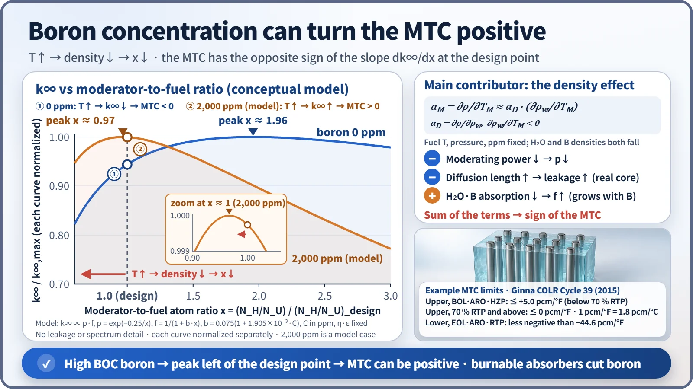
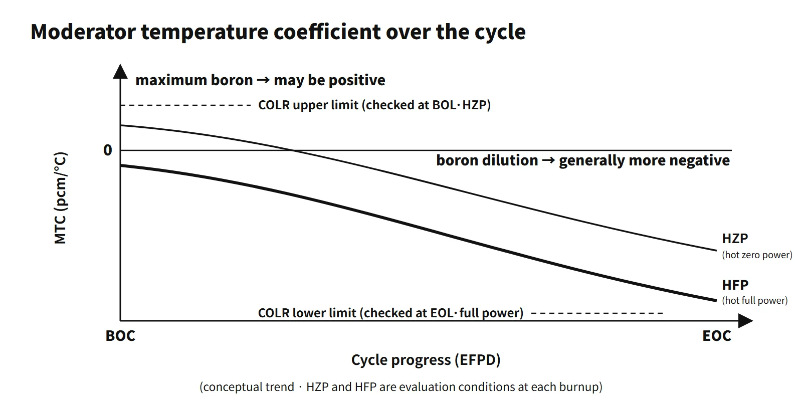

Reactor Physics & Kinetics · C-RX-006
Moderator Temperature Coefficient (MTC) — Sign Set by the Water-Density Effect, and the Positive MTC at Beginning of Cycle
Reactivity change per degree of moderator temperature: the density mechanism, the boron-driven positive MTC at BOC, COLR limits and the minimum temperature for criticality.
The moderator temperature coefficient (MTC, αM) is the change in reactivity per degree of change in the average moderator temperature with all other temperatures held fixed, αM = ∂ρ/∂TM, expressed in pcm/°C or pcm/°F (1 pcm/°F = 1.8 pcm/°C). Exam questions that say "moderator temperature coefficient" or "MTC" all refer to the same concept.
A good first line for an answer: "the rate of change of reactivity with moderator temperature; in a light-water reactor the change in water density sets its sign, and the core is designed so that it is negative in the power-operating range."
Principle and mechanism
Density, not temperature, does the work
When the moderator temperature rises in a light-water reactor, the water expands and the hydrogen number density falls. The MTC is set mostly by this density effect; the pure temperature (spectrum-hardening) effect is small. The MTC is therefore linked to the moderator density coefficient αD = ∂ρ/∂ρw by αM ≈ αD·(∂ρw/∂T), with ∂ρw/∂T < 0. A drop in density does three things at once:
- Less moderating power → the resonance escape probability p falls (negative).
- Longer slowing-down and diffusion lengths → the non-leakage probability falls (negative).
- Less absorption in the water and the dissolved boron → the thermal utilization factor f rises (positive). This term grows in proportion to the boron concentration.
The sum of the three sets the sign of the MTC. A PWR places its design point in the under-moderated region on a boron-free basis (moderator-to-fuel ratio smaller than the ratio at the k∞ peak). Terms 1 and 2 then outweigh term 3 and the MTC is negative.
More boron moves the peak to the left
Dissolved boron increases absorption on the moderator side, so the k∞ peak moves toward lower moderator-to-fuel ratios. If the peak moves to the left of the design point, the design point becomes over-moderated and a temperature rise (density drop) actually increases k∞. This is the mechanism behind the positive MTC at beginning of cycle (BOC) (2019 exam, session 3, Q2).

A simple two-factor model (f = 1/(1 + b·x), p = exp(−0.25/x), design point x = 1) puts the boron-free peak at x ≈ 1.96. At 1,500 ppm the peak is at x ≈ 1.06, and at 2,000 ppm it is at x ≈ 0.97, past the design point. This is a conceptual model without leakage or spectrum changes; the actual boron concentration at which the MTC turns positive comes from core design calculations.
What it means in a plant
How the MTC changes over the cycle
| Factor | Change in MTC | Reason |
|---|---|---|
| Higher boron concentration | Less negative (may become positive) | When density falls, boron leaves too and f rises |
| Burnup (BOC → EOC) | More negative | Mainly boron dilution |
| Higher moderator temperature | More negative | Water's thermal expansion is larger at high temperature |
| Burnable absorbers | Stays negative | Required boron concentration is lower |
Typical ranges for commercial PWRs (illustrative): about 0 to +a few pcm/°F at BOC hot zero power (HZP), about 0 to −10 pcm/°F at BOC full power, and about −30 to −45 pcm/°F at EOC full power.
Both extremes are used in safety analysis
- Least negative (BOC, low power): conservative for heat-up events such as loss of load, loss of feedwater and rod withdrawal at low power, and for the ATWS pressure peak. APR1400 DCD Sections 15.4.1 and 15.4.2 assume the most positive BOC MTC.
- Most negative (EOC): conservative for cooldown events such as a main steam line break, where it drives return to criticality and return to power.
- In normal operation a negative MTC supports power self-regulation and load following. The prompt feedback on the fuel side is the FTC; the combined power feedback of both is the power coefficient.
Minimum temperature for criticality (2013 exam, session 1, Q1; 2026 exam, session 1, Q8)
Reasons for keeping the cold-leg temperature at or above the technical-specification minimum before criticality:
- At lower temperature the MTC is less negative (possibly positive), so the limit keeps the MTC within the range assumed in the safety analysis.
- Protection-system instruments operate within their normal measuring range.
- The pressurizer steam bubble (operable condition) is maintained.
- The reactor vessel goes critical above the minimum RTNDT (P-T limits).
Three calculation questions
- ITC and power coefficient (2020 exam, session 3, Q1; 2026 exam, session 3, Q2): isothermal temperature coefficient ITC = MTC + FTC. For 2020, FTC = −12 − (−10) = −2 pcm/K, and power coefficient = MTC·dTM/dP + FTC·dTF/dP = (−10)(2) + (−2)(10) = −40 pcm/%power. For 2026, FTC = −1 pcm/K and power coefficient = (−5)(1) + (−1)(5) = −10 pcm/%power.
- MTC and stable period (2023 exam, session 4, Q6): −0.2 %Δk/k for a 100 °C rise gives αM = −2 pcm/°C. Cooling from 350 to 320 °C gives Δρ = +60 pcm (+6×10⁻⁴). With the one-group approximation (β = 0.0065, λ = 0.08 s⁻¹) the stable period is T = (β − ρ)/(λρ) = 0.0059/(0.08 × 0.0006) ≈ 123 s, and keff = 1/(1 − ρ) = 1.0006.
Regulatory basis
- 10 CFR 50 Appendix A, GDC 11 (reactor inherent protection): in the power-operating range, the prompt inherent nuclear feedback must tend to compensate for a rapid increase in reactivity. Negative MTC and FTC are what this requirement means in practice.
- NUREG-0800 SRP 4.3 (nuclear design): reviews the calculation of reactivity coefficients and their uncertainties.
- STS LCO 3.1.3 (Westinghouse type, NUREG-1431, current Rev. 5): the MTC is kept within the limits in the core operating limits report (COLR). The upper limit applies in MODE 1 and MODE 2 (keff ≥ 1), the lower limit in MODES 1–3. If the upper limit is not met, administrative rod-withdrawal limits are set within 24 hours, otherwise the plant goes to MODE 2 (keff < 1) within 6 hours. If the lower limit is not met, the plant goes to MODE 4 within 12 hours (example from a plant's technical specifications).
- Example limit values: the Ginna COLR (Westinghouse type, Cycle 39) gives a BOL HZP upper limit of +5 pcm/°F (below 70 % RTP) and 0 pcm/°F (70 % and above), and an EOL full-power lower limit of −44.6 pcm/°F. The CE-type STS (NUREG-1432, LCO 3.1.4) sets the positive limit at [+0.5×10⁻⁴ Δk/k/°F] (70 % RTP or below) and [0] (above 70 % RTP). Actual values follow each unit's COLR for each cycle.
- Measurement: in the startup physics tests (HZP), Tavg is changed slightly to measure the ITC, and MTC = ITC − FTC (calculated). Near the end of cycle a surveillance measurement confirms that the lower limit is met.
- LCO 3.4.2 (minimum temperature for criticality): based on Tavg for Westinghouse plants and on Tcold for CE plants and the APR1400, with the value in the technical specifications themselves (APR1400 DC example: Tcold ≥ 548 °F, with increased surveillance below 553 °F).
- South Korea: the Korean technical standard rule for reactor facilities, Article 18 (reactor inherent protection), sets the same requirement as GDC 11. The operating technical specifications contain LCOs for the MTC and the minimum temperature for criticality, with the numbers in the COLR.
- IAEA: SSR-2/1 (Rev. 1, 2016) core design requirements; SSG-52 (2019) evaluation of reactivity coefficients.
- Then and now: the STS moved from Rev. 2 at the time of the 63rd exam (2001) to the current Rev. 5 (2021), but the MTC concept and the LCO structure are the same.
Easily confused pairs
| MTC | FTC (Doppler) | ITC | Power coefficient | |
|---|---|---|---|---|
| Variable | Moderator temperature | Fuel temperature | Fuel and moderator together | Power (%) |
| Main mechanism | Water density (moderation, absorption) | U-238 resonance broadening | Sum of the two | Sum of temperature-distribution changes |
| Response | Slow (after heat transfer) | Prompt | — | — |
| Sign | May be positive at BOC, most negative at EOC | Always negative | Usually negative | Designed negative |
| Measurement / relation | MTC = ITC − FTC | Calculated value used | Measured at HZP | Σ coefficient × dT/dP |
The moderator density coefficient and the void coefficient describe the same density effect through a different variable.
Key points at a glance
Model answer (10 points): why the BOC moderator temperature coefficient of a PWR can be positive
- Definition: αM = ∂ρ/∂TM, the change in reactivity per degree of moderator temperature (pcm/°C).
- Main mechanism: temperature↑ → water density↓ (the pure temperature effect is small).
- Negative effects: moderating power↓ → p↓; diffusion length↑ → leakage↑.
- Positive effect: absorption by water and dissolved boron↓ → f↑, proportional to the boron concentration.
- Design: under-moderated on a boron-free basis, so the MTC is negative in the power-operating range.
- Why BOC can be positive: large excess reactivity means maximum boron → the k∞ peak shifts left → the design point falls on the over-moderated side.
- Low temperature and low power: smaller thermal expansion of water makes the MTC less negative → minimum temperature for criticality limit.
- Countermeasures: burnable absorbers to limit boron, COLR upper limit with HZP measurement, rod-withdrawal limits if the upper limit is exceeded.
- EOC: boron dilution makes the MTC most negative → conservative for cooldown events (MSLB).

This is a model answer, not an official solution. It reflects the criteria current as of 2026.
Exam relevance
The MTC has appeared eight times in the Korean Professional Engineer (Nuclear Power) exam: 63rd exam (2001), session 3, Q6 (why boric acid is used for reactor control and its effects); 2013 exam, session 1, Q1 and 2026 exam, session 1, Q8 (why a minimum cold-leg temperature is kept before criticality); 2019 exam, session 3, Q2 (why the BOC MTC can be positive); 2020 exam, session 3, Q1 and 2026 exam, session 3, Q2 (power-coefficient calculations from MTC and ITC); 2023 exam, session 3, Q5 (moderator temperature, density and void coefficients); and 2023 exam, session 4, Q6 (MTC and stable-period calculation). Descriptive questions ask for the density mechanism, the boron effect and the minimum temperature for criticality; calculation questions ask for FTC = ITC − MTC, the power coefficient and the reactivity inserted by a cooldown. Watch the units: convert pcm/°F to pcm/°C (×1.8) before combining values, and remember that a cooldown inserts positive reactivity when the MTC is negative.